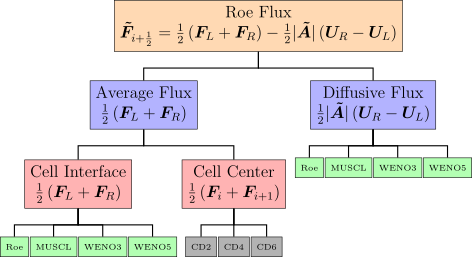
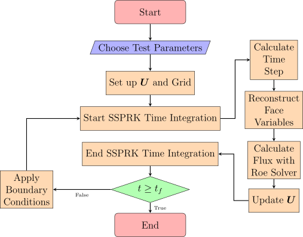

Roe’s flux encompasses two flux terms — an average flux and a diffusive flux. The diffusive flux adds numerical diffusion to the solution near high-gradient regions to keep Roe’s scheme stable. This study attempts to increase the order of accuracy of the Roe scheme by two approaches. The first approach is a higher-order WENO reconstruction of the left and right states. These reconstructed states are used to extend Roe’s scheme to third and fifth-order. The second approach involves modifying the Roe scheme to use a higher-order central differencing of the cell centered variables for the average flux and the MUSCL and higher-order WENO reconstructed variables for the diffusive flux. A second, fourth, and sixth-order central differencing of the cell centered variables is used to extend Roe’s scheme to a higher-order. Figure 1.1 shows an outline of the methods used to compute the Roe flux. A fifth-order six-stage Strong Stability Preserving Runge-Kutta (SSPRK) method is used for time integration to keep the solution TVD in time. Figure 1.2 provides an overview of the scheme.
The two approaches are applied to four test cases to investigate the behavior of these schemes. The first test case is a modified version of Sod’s [26] shock tube problem in which the location of the initial discontinuity has been shifted from \(x=0.5\) to \(x=0.3\) . This test case is used to assess the entropy satisfaction properties of numerical methods. The second test case is a blast wave problem made of the left half of Woodward and Colella’s [35] blast wave problem used to assess the robustness of numerical methods. The third test is a severe test consisting of a shock collision between the left and right halves of Woodward and Colella’s blast wave problem. The last test case from Toro [29] consists of a stationary contact wave used to assess numerical methods’ ability to capture slowly-moving and stationary contact waves.